Niños
0 a 5 años
Pago único₡17.000

Retiro de Salud Mental
Un espacio para detenernos, reflexionar y aprender a cuidar nuestra mente y nuestras emociones, con Cristo en el centro del proceso.
Fecha
30 y 31 de enero del 2027
Lugar
Centro Pastoral El Redil
Tres Ríos, Cartago
Orador invitado
Dr. Manuel Montero
A lo largo de nuestra vida podemos experimentar heridas emocionales, pensamientos que nos afectan, ansiedad, estrés, pérdidas, decepciones, temores y situaciones que dejan huellas en nuestra mente y nuestro corazón.
En LibreMente creemos que Jesús es el verdadero Sanador y Restaurador. Él conoce profundamente nuestra mente, nuestro corazón y nuestras luchas, y puede acompañarnos en el proceso de restauración y transformación.
LibreMente es un retiro de salud mental basado en principios bíblicos diseñado para crear un espacio de pausa, reflexión, aprendizaje y conexión con Dios.
En medio de una vida llena de responsabilidades, preocupaciones, presión, expectativas y ruido, muchas veces seguimos adelante sin detenernos a preguntarnos cómo estamos realmente. Este retiro busca ayudarnos a comprender mejor nuestra mente, emociones y relaciones, descubriendo cómo los principios de la Biblia pueden guiarnos en el cuidado de nuestra salud mental y espiritual.
Será una oportunidad para aprender, reflexionar y encontrar en Dios esperanza, dirección y restauración.
Durante el retiro tendremos diferentes temas relacionados con nuestra salud mental y bienestar integral, entre ellos:
Comprender mejor lo que pensamos y sentimos.
Reconocer cómo pueden afectar nuestra vida y aprender formas saludables de afrontarlos.
Identificar situaciones que pueden seguir afectándonos y descubrir caminos de restauración.
Reconocer cómo nuestras decisiones diarias pueden influir en nuestra salud mental.
Explorar la importancia de nuestra relación con Dios en el proceso de crecimiento, esperanza y restauración.
Entender que pedir ayuda no es una señal de debilidad y reconocer la importancia de acudir a personas capacitadas cuando sea necesario.
LibreMente no busca presentar una vida sin problemas, sino ayudarnos a enfrentarlos de una manera más consciente, saludable y acompañada, poniendo a Cristo en el centro del proceso.
No necesitas tener un diagnóstico ni estar atravesando una crisis para participar. La salud mental es parte de nuestra vida y todos podemos aprender a cuidarla mejor.
Orador invitado
Médico (M.D.) y Doctor en Neurofisiología (Ph.D.) por la Universidad de Loma Linda (California), centrado en la investigación de enfermedades neurodegenerativas.
Pertenece a la Asociación Puertorriqueña del Oeste. Ha sido profesor de anatomía, fisiología y biología molecular, además de mentor de estudiantes interesados en carreras científicas. Actualmente es residente de Medicina de Familia, Fellow de Medicina de Adicción y Research Fellow de Neurofisiología en Loma Linda University.
Desde 2010 colabora activamente con el ministerio GYC inspirando a las nuevas generaciones, y ha sido un orador reconocido en congresos de GYC a nivel internacional. Está casado y tiene tres hijos. Es un privilegio tenerlo como parte de nuestros oradores aquí en Costa Rica.
Elige la categoría según la edadstrong> de cada participante y la forma de pagostrong>. Te llevaremos al formulario de registro.
0 a 5 años
6 a 45 años
Mayores de 45 años
¿Tienes dudas sobre la inscripción?
Escríbenos por WhatsApp al +506 6466-3412 o mándanos un correo a gyccostarica.registro@gmail.com
¡Con gusto te ayudaremos!